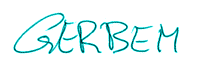

ускорение
скачиваем файлы
инструменты
смертные грехи
отзывы
обмен ссылками
< обо мне >
бесплатная почта
|
|
Зовут меня Gerben Hoekstra, мне 38 лет. Живу я в Гронингене, столице провинции Гронинген, на севере Нидерландов. В этом городе я родился и вырос. Мой отец был шкипером, и до пяти лет я жил на корабле. После этого мы переселились в город. Здесь я окончил школу и потом изучал архитектуру в Гронингенском Политехническом.
С тех пор я работал в нескольких компаниях системным оператором и руководителем проекта. Но основным занятием, тем не менее, было черчение и конструирование на AutoCAD в нескольких архитектурных и инженерных агентствах. В настоящее время я все больше и больше занимаюсь профессиональным созданием и программированием web сайтов.
Живу я в собственном одноэтажном доме с потрясающим видом на пруд и сад спереди и сзади. Многое пришлось переделать самому. Летом люблю сидеть в саду, да и работать тоже. В ближайшем будущем планирую переехать в дом побольше.
Хобби
Много времени провожу в интернете. Просто брожу, пробую новые программы, создаю web страницы и т.д. Интересуюсь техникой, языками, лингвистикой, литературой, дизайном, передачей информации и многими другими вещами. Увлечение интернетом естественно из этого вытекает. Это хобби постепенно перестает быть таковым. Сейчас я работаю на нескольких сайтах. Пока по договорам, но в будущем, возможно, создам собственную компанию.
Люблю ходить в кино. Во время учебы я почти десять лет проработал не полный день в кинотеатре. Это был, сейчас уже закрытый Городской Гронингенский Театр. Вот некоторые из моих любимых фильмов: Охотник на оленей, Пробуждение, Выбор Софи, 37° ля матин, Девушка со спичечной фабрики, Ребята в капюшонах и многие другие. Среди той нескончаемой ерунды, которую показывают по ТВ, тоже встречаются довольно неплохие фильмы, или неплохие сериалы, типа ER, Убийство номер один, Друзья, Seinfeld, Ally McBeal, Сопрано.
Спортом почти не занимаюсь. Люблю долгие прогулки вдоль каналов или по городу. Летом иногда езжу на спортивном велосипеде. В былые годы ездил больше часа каждый день. Теперь, скорее, для развлечения по хорошей погоде.
Люблю музыку, но в основном слушаю. Многие годы играл на классической гитаре, так что могу назвать себя музыкантом. Из музыки предпочитаю тяжелый рок. Люблю Offspring, Nirvana, Red hot chili peppers, Stiltskin, Cranberries и тому подобные. Домашнюю музыку, в общем то не люблю, но некоторые альбомы стоит послушать, например, "Музыка для потерянного поколения" от Prodigy.

|